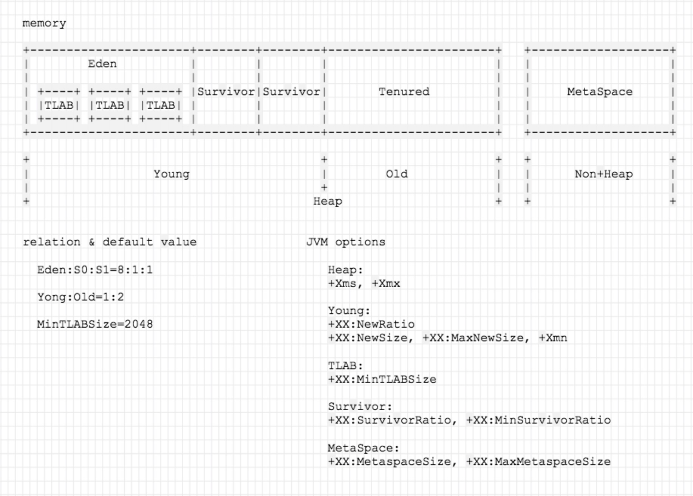
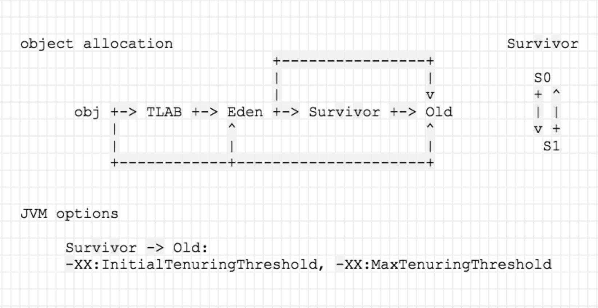

JVM GC
JDK 8
参数设置
内存区域设置：
| 参数 | 含义 | 说明 |
|---|---|---|
| -XmsN | 堆空间初始值 | 默认值取决于：OS、Memory、JVM 等 |
| -XmxN | 堆空间最大值 | 默认值取决于：OS、Memory、JVM 等 |
| -Xss=N | 线程栈大小 | |
| -XX:NewSize=N | 新生代空间初始值 | |
| -XX:MaxNewSize= N | 新生代空间最大值 | |
| -XmnN | 同时设置 NewSize 和 MaxNewSize | |
| -XX:NewRatio=N | 新生代与老年代的空间占用比率 | NewSize=HeapSize / (1 + NewRatio)，默认 2 |
| -XX:SurvivorRatio=N | Eden 空间与 Survivor 空间比率 | 默认 8 |
| -XX:MinSurvivorRatio=N | 最小比率 | 默认 3 |
| -XX:TLABSize=N | TLAB 初始值 | 默认 0，表示取决于，线程数、Eden 空间大小、线程的分配率 |
| -XX:MinTLABSize=N | TLAB 最小值 | 默认 2048 |
| -XX:MetaspaceSize=N | 元空间初始值 | 默认无限制 |
| -XX:MaxMetaspaceSize= N | 元空间最大值 | 默认无限制 |
内存管理：
| 参数 | 含义 | 说明 |
|---|---|---|
| -XX:+HeapDumpOnOutOfMemoryError | OOM 时，自动堆转储 | |
| -XX:HeapDumpPath=* |
自动堆转储时，保存的文件名 |
GC：
| 参数 | 含义 | 说明 |
|---|---|---|
| -XX:ParallelGCThreads=N | 垃圾收集器的线程数 | |
| -XX:InitialTenuringThreshold=N | 对象在 Survivor 存活的GC周期数，初始值 | CMS 默认 6 |
| -XX:MaxTenuringThreshold=N | 对象在 Survivor 存活的最大GC周期数 | CMS 最大晋升值 6 |
GC 算法：
| 参数 | 含义 | 说明 |
|---|---|---|
| -XX:+UseConcMarkSweepGC | 使用 CMS 收集器 | JDK 8 默认 |
GC log：
| 参数 | 含义 | 说明 |
|---|---|---|
| -verbose:gc | 输出 GC 日志 | 等于设置 -XX:+PrintGC |
| -Xloggc:* |
将 GC日志记录输出到文件 | |
| -XX:+PrintGCDetails | 开启GC的详细日志 | |
| -XX:+PrintGCTimeStamps | 打印相对时间戳 | |
| -XX:+PrintGCDateStamps | 打印日期时间戳 | |
| -XX:+UseGCLogFileRotation | 开启GC日志循环功能以节省文件空间 | |
| -XX:NumberOfGCLogFiles=N | 开启日志循环时，设定保留多少个日志文件 | |
| -XX:GCLogFileSize=N | 开启日志循环时，设定每个日志文件的大小 | |
| -XX:+PrintTLAB | GC日志中，输出TLAB相关的概略信息 |
内存区域

对象分配

CMS：
- 并发模式失效（concurrent mode failure）：Old 没有足够空间容纳晋升对象。STW，退化为 Full GC。
- 晋升失败（promotion failed）：Old 有足够空间，但碎片化，无足够连续空间。STW，对 Old 整理、压缩。
最终仍不能分配：
java.lang.OutOfMemoryError: Java heap space
GC 算法
引用计数：
记录每一个对象被其他对象引用的个数。引用计数不为 0，该对象就是存活对象。没办法处理循环引用。
可达性分析：
从 GC roots 开始，引用可达的对象就是存活对象。
- 标记-清除（Mark-Sweep）。
- 标记-复制（Mark-Copy）。
- 标记-整理（Mark-Compact）。
垃圾回收器（CMS）
初始标记：
标记 GC Roots 直接关联的对象。STW。
1 | 2020-03-17T10:27:04.376+0800: 59944.001: [GC (CMS Initial Mark) [1 CMS-initial-mark: 1027928K(1329152K)] 1579202K(2020352K), 0.0843949 secs] [Times: user=0.33 sys=0.00, real=0.09 secs] |
并发标记：
从 GC Roots 直接关联的对象开始，遍历整个对象图。并发（用户线程与垃圾收集线程，新生代垃圾收集线程与老年代垃圾收集线程）。
1 | 2020-03-17T10:27:04.461+0800: 59944.086: [CMS-concurrent-mark-start] |
并发预清理：
查找上一阶段标记过程中，晋升或引用关系变更的对象，重新扫描。并发。
ps: Card marking
1 | 2020-03-17T10:27:04.842+0800: 59944.467: [CMS-concurrent-preclean-start] |
并发可中止预清理：
与并发预清理做的事情一样。“可中断”目的是尽量缩短停顿时间，避免连续停顿。并发。
1 | 2020-03-17T10:27:04.846+0800: 59944.471: [CMS-concurrent-abortable-preclean-start] |
重新标记：
从 GC Roots 开始重新扫描引用关系更新过的对象。STW。
1 | 2020-03-17T10:27:04.847+0800: 59944.472: [GC (CMS Final Remark) [YG occupancy: 551387 K (691200 K)]2020-03-17T10:27:04.847+0800: 59944.472: [Rescan (parallel) , 0.0890724 secs]2020-03-17T10:27:04.936+0800: 59944.561: [weak refs processing, 0.0000877 secs]2020-03-17T10:27:04.936+0800: 59944.561: [class unloading, 0.0264603 secs]2020-03-17T10:27:04.962+0800: 59944.588: [scrub symbol table, 0.0090855 secs]2020-03-17T10:27:04.972+0800: 59944.597: [scrub string table, 0.0016117 secs][1 CMS-remark: 1027928K(1329152K)] 1579315K(2020352K), 0.1266247 secs] [Times: user=0.39 sys=0.00, real=0.13 secs] |
并发清除：
清除垃圾。并发。
1 | 2020-03-17T10:27:04.974+0800: 59944.599: [CMS-concurrent-sweep-start] |
并发重置：
一个 CMS 垃圾回收周期结束，重置 CMS 内部数据。并发。
1 | 2020-03-17T10:27:05.112+0800: 59944.737: [CMS-concurrent-reset-start] |
GC 工具
常用命令
1 | java -XX:+PrintFlagsFinal -version |
jps
查看 JVM 进程信息
1 | jps [-help] |
| 参数 | 含义 | 例 |
|---|---|---|
| -v | 输出 JVM 参数 | jps -v |
| -l | 输出jar的完全路径名 | jps -l |
| -m | 输出main method的参数 | jps -m |
jstat
JVM 监控工具
1 | jstat -help|-options |
| 参数 | 含义 | 例 |
|---|---|---|
| -options | 查看统计选项 | jstat -options |
| -gcutil | 简要的垃圾回收信息统计 | jstat -gcutil pid 3s 10 |
| -gc | 垃圾回收信息统计 | jstat -gc pid 3s 10 |
jmap
查看 Java 内存
1 | jmap [option] <pid> |
| 参数 | 含义 | 例 |
|---|---|---|
| -heap | 打印 heap 的概要信息 | jmap -heap pid |
| -histo[:live] | 打印 heap 的直方图 | jmap -histo pid |
| -dump: |
导出 JVM 内存信息, | jmap -dump:live,format=b,file=heap.hprof pid |
jstack
查看 java 栈
1 | jstack [-l] <pid> |
| 参数 | 含义 | 例 |
|---|---|---|
| -m | 打印 java & native 栈 | jstack -m pid |
| -l | 长列表，打印关于锁的附加信息 | jstack -l pid |
jcmd
1 | jcmd <pid | main class> <command ...|PerfCounter.print|-f file> |
| 参数（cmmand） | 含义 | 例 |
|---|---|---|
| help | 显示所有可用的命令 | jcmd pid help |
| VM.flags [-all] | 打印 jvm 参数 | jcmd pid VM.flags |
| VM.command_line | VM 摘要 | jcmd pid VM.command_line |
other
1 | 输出进程 <pid> 的全部线程信息 |
Memory Analyzer(MAT): 堆转储文件分析工具。
Reference
- https://docs.oracle.com/javase/8/docs/technotes/guides/vm/gctuning/
- Java 性能权威指南
- [https://pingao777.github.io/2019/05/03/Java%20HotSpot%E8%99%9A%E6%8B%9F%E6%9C%BA%E5%9E%83%E5%9C%BE%E6%94%B6%E9%9B%86%E4%BC%98%E5%8C%96%E6%8C%87%E5%8D%97/](https://pingao777.github.io/2019/05/03/Java HotSpot虚拟机垃圾收集优化指南/)
- https://segmentfault.com/a/1190000007765676
- https://www.cnblogs.com/grey-wolf/p/10222758.html
- https://gist.github.com/wvyov/07f881eea3ff56078440f861ceb901a3
- 深入理解 Java 虚拟机（第3版）
- http://ifeve.com/jvm-cms-log/